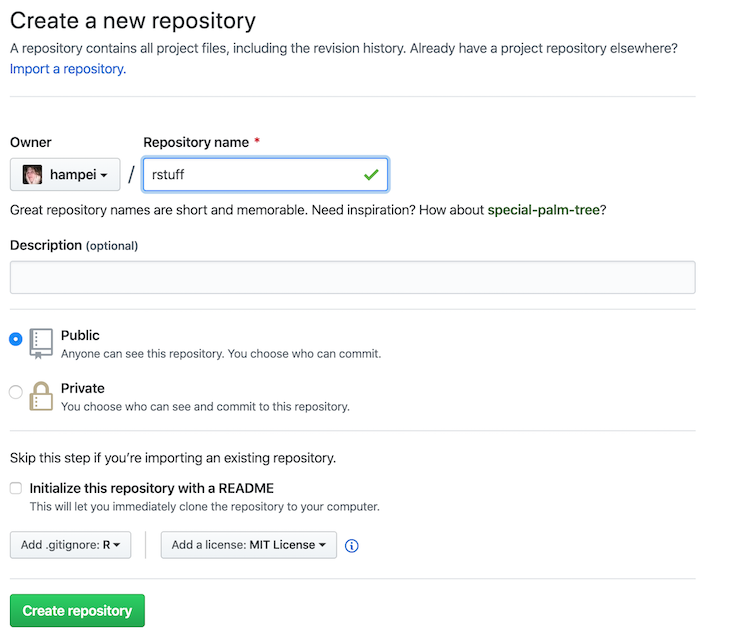
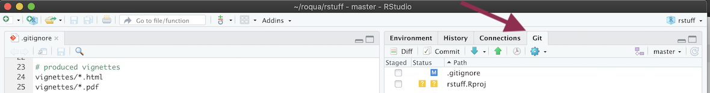

Install
Create a repository
- Go to github.com
- Login or Sign up for an account
- Click on the New button next Repositories.
- Add an R .gitignore file
- Add a license
- “Create repository”
- “Clone or download” > “use HTTPS” > copy url

new project form
Install basics
Checkout repository
- Open RStudio
- File > New Project
- Version Control > Git
- paste github url
- select a parent directory
- “Create Project”

clone new project
First commit
- Open the git panel on the right 
- click commit
- select both files
- enter a commit message
- press commit
- press push
- enter github details

review changes
Install packrat
- Back on the main screen open the Packages panel
- Click on “Packrat”
- Select “Use packrat with this project”
- Ok
- If a popup appears to install extra pacakges say yes.
- Select the options you want
- press ok
commit all changes files and push, only these files should be visible:
new file: .Rprofile modified: .gitignore new file: packrat/init.R new file: packrat/packrat.lock new file: packrat/packrat.opts

enable packrat
Install rmarkdown
- Install the
rmarkdownpackage. - create a new folder
siteand enter it - “File” > “New File” > “R Markdown…”
- press ok and save it to
site/index.Rmd - Press the
Knitbutton at the top of the file to test. Add site/_site.yml with
name: "Cool R stuff" output_dir: "html" navbar: title: "Cool R stuff" left: - text: "Index" href: index.html - text: "Install" href: install.html output: html_document: theme: cosmo exclude: ["public"]add
/site/htmlto .gitignore file so the generated html is not added to git.